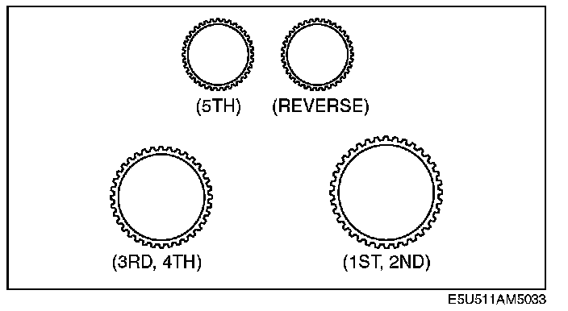
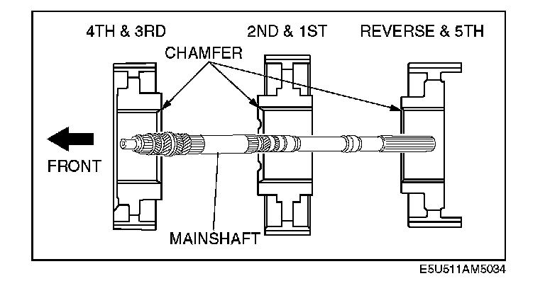

General Procedures (Manual Transmission)
PrecautionTransmission disassembly/assembly
^ Clean the transmission exterior thoroughly with a steam cleaner or cleaning solvent before disassembly.
Warning: Using compressed air can cause dirt and other particles to fly out, causing injury to the eyes. Wear protective eye wear whenever using compressed air.
^ Clean the removed parts (except sealed bearings) and all sealing surfaces with cleaning solvent, and dry with compressed air. Clean out all holes and passages with compressed air, and verify that there are no obstructions.
^ All O-ring and gaskets must be replaced with the new ones included in the overhaul kit.
^ Before assembly, make sure all parts are completely clean.
^ Assemble the parts within 10 min after applying sealant. Allow all sealant to cure at least 30 min after assembly before filling the transmission with transmission oil.
Clutch hub
^ For the synchronizer components, align the synchronizer ring grooves and synchronizer keys.

^ The synchronizer rings can be distinguished as shown in the figure. The inner diameter of the 2nd synchronizer ring is larger than the 1st.

^ When installing the gears and clutch hub components in the following procedure, make sure that they are installed in the direction shown in the figure.